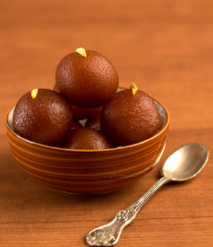
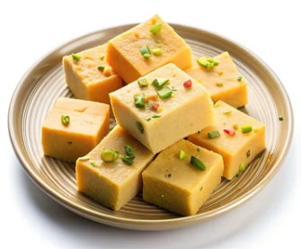

Gulab Jamun
Ingredients
- Sugar
- Milk
- Oil
- Flour
- Baking Soda
Recipe
- Mix milk powder, all-purpose flour, baking soda, and ghee.
- Add milk gradually to make a soft dough.
- Rest the dough for 10 minutes, then roll into smooth, small balls.
- Deep-fry the balls on low heat until golden brown.
- Prepare sugar syrup with sugar, water, and cardamom.
- Soak the fried balls in warm syrup for 30 minutes and serve warm.

Barfi
Ingredients
- Sugar
- Milk
- Oil
Recipe
- Heat ghee in a pan and add condensed milk and milk powder.
- Cook the mixture on low heat while stirring continuously.
- When it thickens and leaves the sides, transfer to a greased tray.
- Flatten and garnish with chopped dry fruits or silver leaf.
- Let it cool, then cut into square pieces and enjoy!
